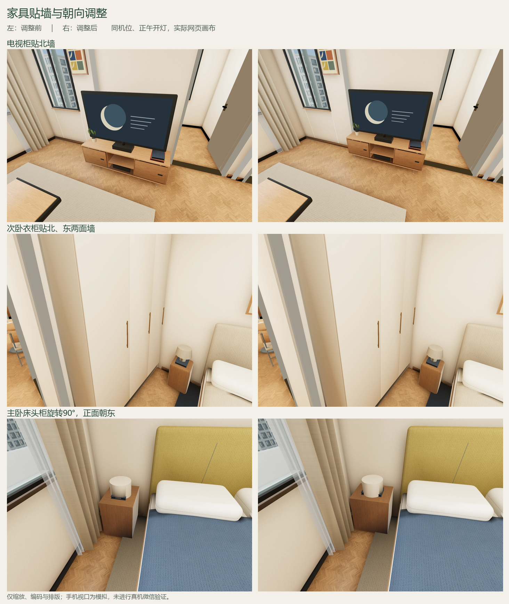

杭州 · 璞荟铭庭 / main
家具贴墙与朝向调整
电视柜由原先约30厘米的后方留空改为贴北墙，并向右微调以避开墙角实心补片。默认平开门时贴墙；书房改为外挂推拉门时，电视、柜体和台面物品一起前移13厘米让出门扇，切回平开门后贴墙。次卧衣柜保持北、东墙角位置，贴墙的背板与右侧板改为平直接触面；主卧床头柜旋转90°，正面朝东，台灯与台面物品同步调整。
12组前后对比：桌面/手机 × 正午/夜晚 × 三处家具。均等待静态照明与反射加载完成后再采集，相机位置、方向与FOV一致。未对最终画面后期调亮、压暗或修图。手机与微信UA为模拟。

新家具布置已重新导出并重烘焙固定光照、AO与反射。原建筑墙线、门洞与219张建筑回退贴图保持。检查实际柜面到两墙距离、全部门型扫掠、床三侧通行与手机横竖屏；真机微信和整体视觉验收仍待完成。